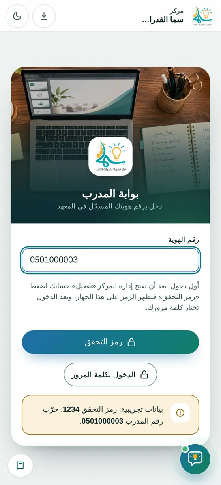
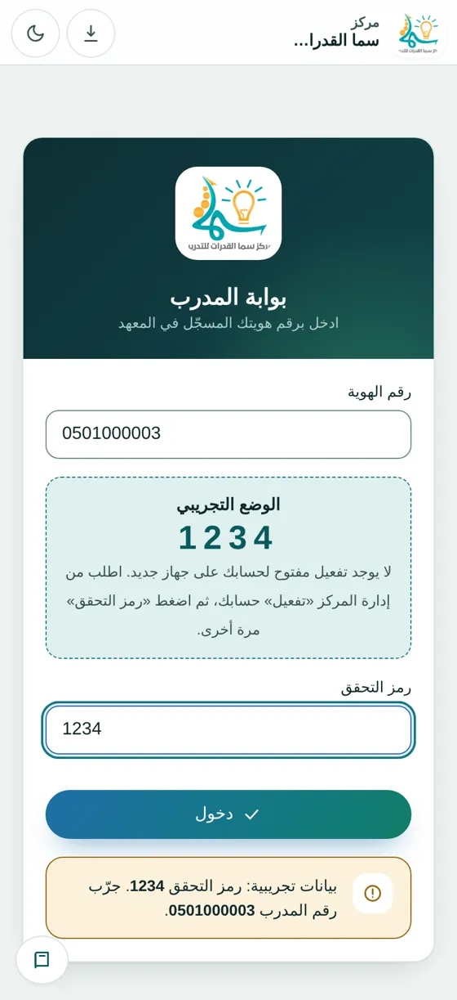
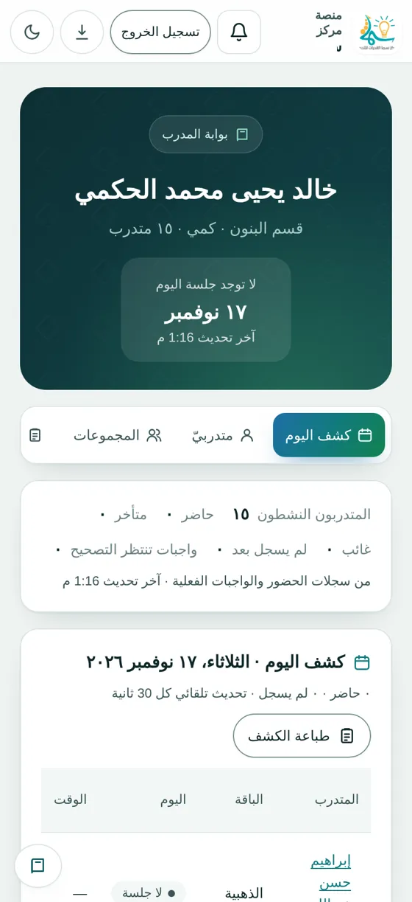
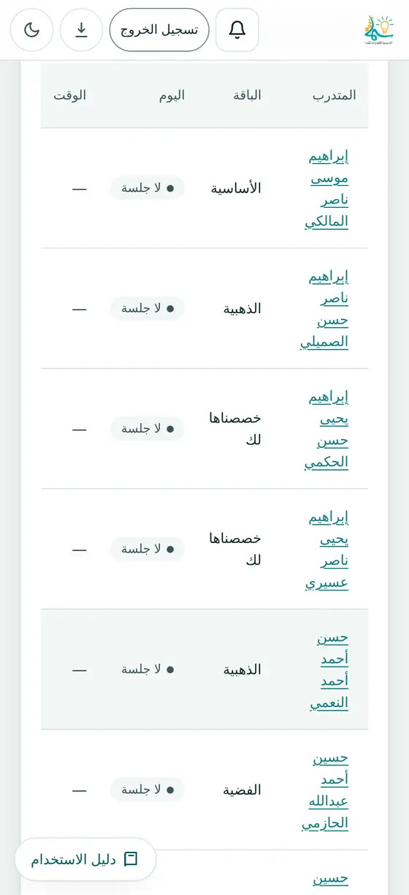
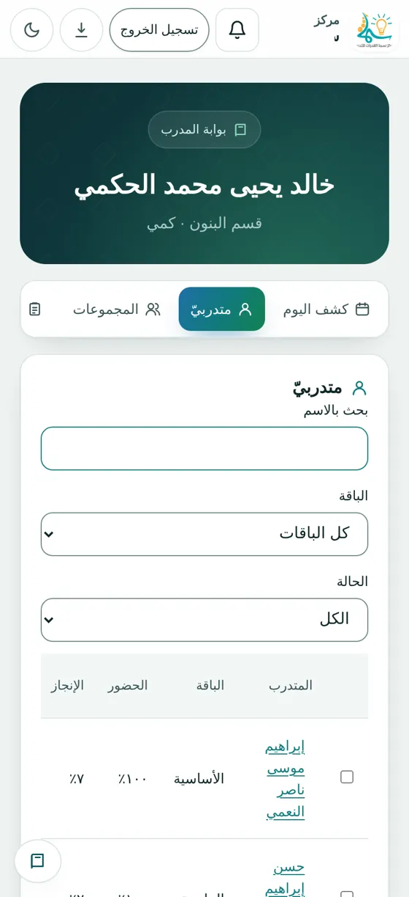
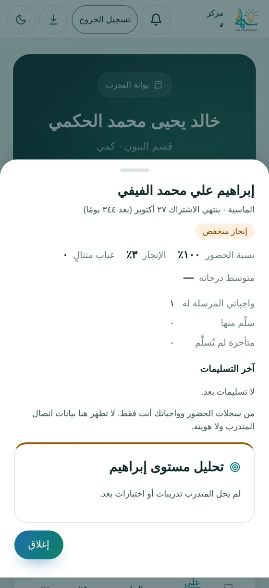
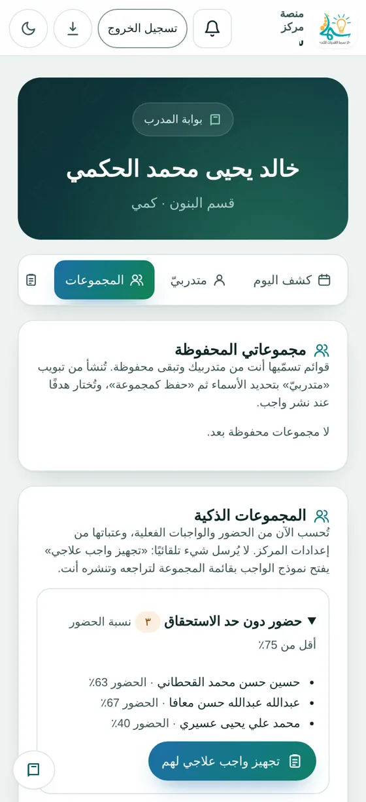
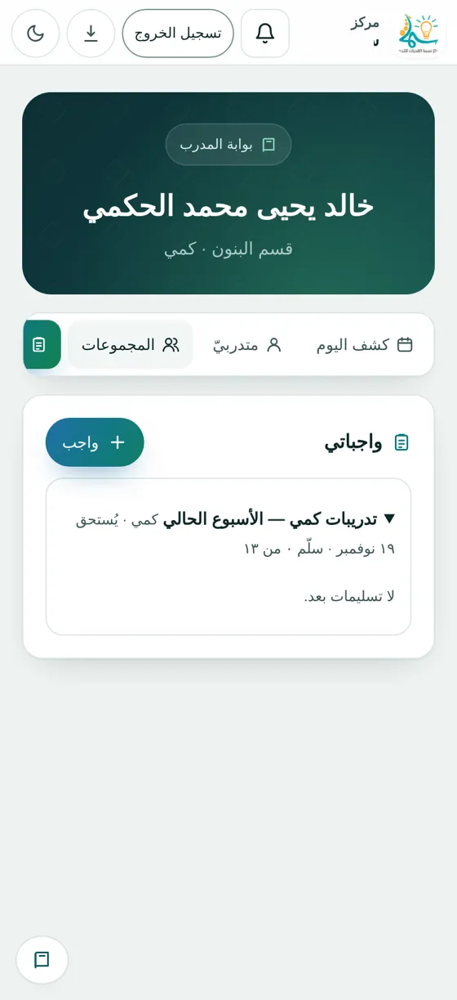
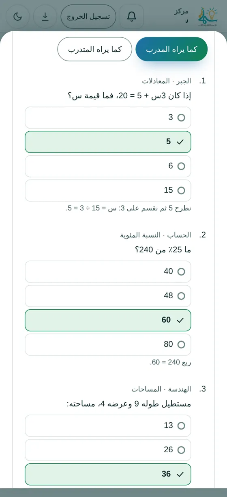
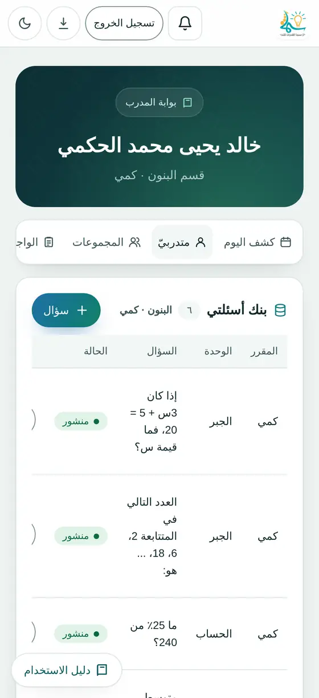

1الدخول إلى بوابة المدرب
- افتح بوابة المدرب من «البوابات» في الموقع واكتب رقم هويتك.
- بعد أن تفتح إدارة المركز «تفعيل» حسابك (تصلك رسالة واتساب برابط البوابة)، اضغط «رمز التحقق» فيظهر الرمز تحت الزر على جهازك وحده. اكتبه ثم «دخول»؛ يُعتمد جهازك وتبقى داخلًا.
- جهاز جديد أو بعد انتهاء التفعيل: تظهر لك رسالة «لا يوجد تفعيل مفتوح»، ويصل طلبك للإدارة باسمك؛ بعد أن تفتح التفعيل اضغط «رمز التحقق» مرة أخرى.
- بعد أول دخول تختار كلمة مرور (8 أحرف على الأقل فيها حرف ورقم) وتؤكدها، ثم تدخل من أي جهاز برقم هويتك وكلمة المرور. نسيت كلمة المرور؟ اضغط «نسيت كلمة المرور» واطلب من الإدارة تفعيل حسابك، ثم «رمز التحقق» واختر كلمة جديدة؛ تخرج أجهزتك الأخرى. ومن «أجهزتي»: تغيير كلمة المرور و«الخروج من الأجهزة الأخرى».
- زر التحميل في الأعلى يثبّت البوابة كتطبيق على جوالك، والجرس يعرض الإشعارات.
صور هذا الدليل من النسخة التجريبية ببيانات وهمية، والرمز 1234 فيها للتجربة فقط.


2كشف اليوم
ملخص عملك اليوم: المتدربون النشطون، والحاضرون والمتأخرون والغائبون، ومن لم يسجل بعد، والواجبات التي تنتظر التصحيح، مع وقت آخر تحديث. وتحته كشف الجلسة: اسم كل متدرب وباقته وحالته ووقت حضوره، ويتحدث تلقائيًا كل 30 ثانية.
- اضغط اسم المتدرب لترى بطاقته.
- «طباعة الكشف» يطبع كشف اليوم على A4 بترويسة المركز: الغائبون ومن لم يسجل أولًا، بلا هوية ولا جوال.


3متدربيّ
قائمة متدربي مقرراتك مع الباقة ونسبة الحضور والإنجاز، وتصفيتها بالاسم والباقة والحالة (غياب متتالٍ، إنجاز منخفض، قرب انتهاء الاشتراك…).
- اضغط الاسم لفتح بطاقته: الحضور والإنجاز وواجباتك المرسلة له وما سلّمه وآخر تسليماته، وتحتها تحليل مستواه في مقرراتك: نسبة الصواب لكل مهارة من الأضعف (من التدريب والمحاكي واختباراتك).
- حدّد عدة أسماء ثم «حفظ كمجموعة» لتستهدفهم بواجب لاحقًا.
لا تظهر هوية المتدرب ولا جواله في بوابة المدرب.


4المجموعات
مجموعاتي المحفوظة: القوائم التي أنشأتها من «متدربيّ».
المجموعات الذكية: يحسبها النظام الآن من الحضور والواجبات: متأخرو الواجبات، حضور دون حد الاستحقاق، غياب متتالٍ، إنجاز منخفض، اقتراب انتهاء الاشتراك، ولكل باقة. «تجهيز واجب علاجي لهم» يفتح نموذج الواجب بقائمة المجموعة دون نشر، لتراجعه ثم تنشره.

5الواجبات والاختبارات
- من «الواجبات» اضغط «واجب».
- اكتب العنوان واختر نوعه: واجب كتابي أو اختبار من بنك أسئلتي (يُصحَّح آليًا).
- اختر النوع (واجب، تدريب، اختبار رسمي) والمستهدفين: كل متدربي المقرر، أو باقة، أو أفراد، أو مجموعة محفوظة.
- حدّد متى تظهر الإجابات الصحيحة للمتدرب، وعدد المحاولات المسموحة (حتى 3، وتُحتسب أعلى درجة).
- للاختبار: حدّد قسمًا أو أكثر من البنك ليكون شاملًا، واكتب عدد الأسئلة (من 1 إلى 100) ثم «سحب عشوائي»، أو انتقِ أسئلة بعينها؛ رتّبها بالأسهم أو احذف منها.
- اضغط «معاينة» لترى الاختبار كما تراه أنت (بالإجابات الصحيحة) وكما يراه المتدرب، ثم انشر.
- للإرسال الفردي اختر «أفراد بعينهم» وابحث بالاسم، وللجماعي «تحديد الظاهرين» أو باقة أو مجموعة محفوظة.
- بعد التسليم اضغط «مراجعة وتغذية راجعة» لترى إجابة المتدرب في كل سؤال، واكتب ملاحظة لكل سؤال وملاحظة عامة يراها في واجبه (لا تغيّر الدرجة). وتصحّح الكتابي من «تصحيح».
الاختبار يُفتح للمتدرب مرة واحدة ومدته دقيقتان لكل سؤال، ويُصحَّح تلقائيًا عند التسليم أو انتهاء الوقت. والاختبار الرسمي لا يُنشر إلا بمفاتيح إجابات اعتمدتها الإدارة.


6البث المباشر (استوديو سما)
- في الموعد اضغط «دخول قاعة Zoom» في تبويب «البث المباشر» (قاعتك الثابتة التي أضافتها الإدارة)، وجدولك الثابت ظاهر تحتها.
- في Zoom: «المزيد» ← «البث المباشر على YouTube» واختر قناة المركز بخصوصية «غير مدرج»، واكتب وسمك في العنوان إن أعطته لك الإدارة.
- يُسند البث آليًا إلى محاضرة اليوم ويراه متدربوك في بوابتهم، وبعد انتهائه يبقى تسجيله في «محاضراتي» وفي مكتبة متدربيك (إن أتحت التسجيل). ويبدأ بث جديد في اليوم التالي.
- للمحاضرة خارج الجدول استخدم «محاضرة إضافية خارج الجدول»، ويمكن لصق رابط البث يدويًا من «تعديل» إن لم يُسند آليًا.
رابط «غير مدرج» يشاهده من يملكه؛ يُرسل في البوابة لمتدربيك وحدهم، فلا تنشره خارجها.
7بنك الأسئلة والنتائج
أسئلة بنكك (ومعها البنك المشترك لمقررك) بالمقرر والوحدة والحالة. «سؤال» يضيف سؤالًا جديدًا، وتحت البنك نتائج محاولات «قياس مستواي» لمتدربيك.

8الرسائل والتقييمات وملفي
الرسائل: محادثة مع كل متدرب من متدربيك.
تقييماتي: تقييمات المتدربين لك مجمّعة دون أسماء، وتُتاح للمتدرب بعد 3 أيام حضور.
ملفي: صورتك (تُقص مربعة وتُصغَّر تلقائيًا)، ونبذة وسيرة مختصرة، ورابط قناتك في تيليجرام. يراها متدربو مقرراتك وحدهم.
دفعات البرامج: إن كنت مدرب دفعة في برنامج تدريبي يظهر هذا التبويب بكشوف دفعاتك.